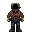

Talos-class Command Clipper

| Short Name: | Talos-class |
| Manufacturer: | Unknown |
| Faction: | Unspecified (Prefix: IRMV) |
| Crew Size: | 12 |
| Size: | Large |
| Tags: | Engineer, Telecomms |
| Buyable: | Yes |
The Talos is a command and support ship, and a rare example of a purpose-built Inteq ship. Outfitted with an abundance of construction and engineering equipment and a private bluespace communications suite capable of networking IRMG ships across any given system, Taloses are often the lynchpin of coordinated IRMG operations in a system, and offer construction and repair services as part of IRMG’s mercenary offerings. As Talos crews place a larger emphasis on support personnel, they tend to be less well-armed than other Inteq crews. One unusual feature of the Talos is its depressurized “wings” filled with redundant baffles, intended to provide extra durability in the case of impacts or weapons fire. They also double as auxiliary storage space and potential room for modification by their enterprising Artificer crews.
| Preview | Name | Officer | Slots |
|---|---|---|---|
|  | Vanguard | Yes | 1 |
| Master At Arms | Yes | 1 | |
| Honorable Artificer | Yes | 1 | |
| Artificer | No | 3 | |
| Enforcer | No | 1 | |
| Corpsman | No | 1 | |
| Recruit | No | 4 |
One of Inteq Risk Management Group's larger and better-equipped vessels, the Talos class makes up the more commonly seen command and engineering elements of Inteq fleets. Like most Inteq ships, they are former freighters which have been ruggedized and professionally converted for mercenary use, and come outfitted with a substantial array of engineering equipment and a full communications suite, suitable for coordinating other Inteq ships and carrying out repair and construction operations most IRMG ships lack the facilities for. Talos crews can commonly be found constructing new Inteq planetary facilities, performing repairs and upgrades on other IRMG ships, and generally performing their duties as engineering experts for hire, a critical element of IRMG's mercenary services. Their status as support vessels does tend to leave their armories rather bare, however, as other IRMG ships receive higher priority in arms procurement.
Gameplay
The Talos is a large, well-staffed ship that features a three-officer command structure, a unique TEG setup, and ample engineering equipment. The two "wings" on the fore half of the Talos start out as depressurized maintenance / cargo areas, and represent excellent candidates for clearance and expansion into new rooms. It also has noticeably more space reserved for crew quarters and amenities than similar ships. While the Talos has a dedicated armory with a Master-At-Arms responsible for its maintenance and the security of the ship as a whole, it isn't particularly well-armed at the start of the round, in exchange for its other utilities. Like most Inteq ships, it also has severe deficiencies when it comes to mining and medical care.
The Talos's unique engine and atmospherics setup deserves special mention, as both tanks and the burn chamber can be accessed directly via blast doors. Doing so without first enabling their accompanying holofields is not recommended, and can and will flood the engine room- and possibly the entire rear quarter of the ship- with high-pressure and potentially burning gas. All of these blast doors and holofields are locked behind Artificer access, and the engine burn chamber itself can only be opened by the Artificer Class II and the Vanguard.
Quick bullet-point rundown of features:
- Research bay with a cargo hauler Ripley and engineering protolathe
- Pre-configured telecomms equipment enables local comms and includes a relay to other Inteq ships (provided they also have a relay)
- Armory space with a separate office for the Master-At-Arms
- Moderate supply of weaponry including 1 Commissioner, 2 Shotguns, a box of flashbangs, and spare ammunition
- Large amounts of maintenance space available for construction projects
- A crate of basic medical supplies in the cargo bay
How Should I Pilot This?
The Talos's starting equipment encourages the usual Inteq gameplay of running missions and offering mercenary services, but the Talos in particular is well-suited to assisting other players with construction and engineering projects- or embarking on those projects all on its own. Consider using your comms to coordinate with other allied ships, arrange meetups, and upgrade their equipment, or offer those same upgrades to any other ship- for a fair price, of course. Be careful about combat, especially against other players- while you start with high-quality armor compared to many other ships, you lack the firepower to overpower anything of similar size and your lone Corpsman with his basic equipment and very cramped working space will quickly find himself overwhelmed should you accumulate a significant number of casualties. Consider building a dedicated medbay and prioritizing weapon acquisition to mitigate these weaknesses.
Engine Startup
The simplest way to set up the Talos TEG
- Go to the red pump. If you are at the outpost, wait until you undock to turn this on. Turn this on and max it.
- Go to the 3 orange pumps. Turn them on and max them out.
- Go to the yellow freezer. Turn this on and lower the temperature completely.
- Go to the green fuel pump. Turn this on and set it to 300kpa.
- Go to the blue igniter button. This should start the engine!
- Go to the purple SMESs. Turn the input to max!